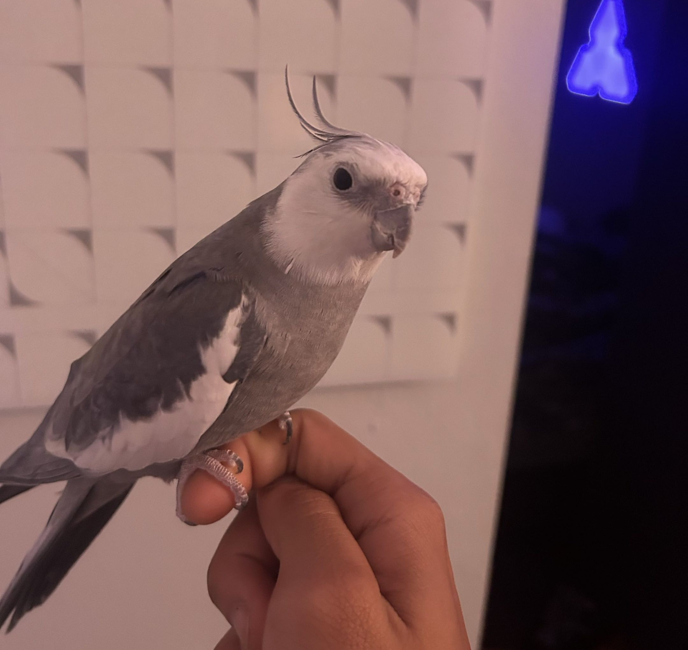
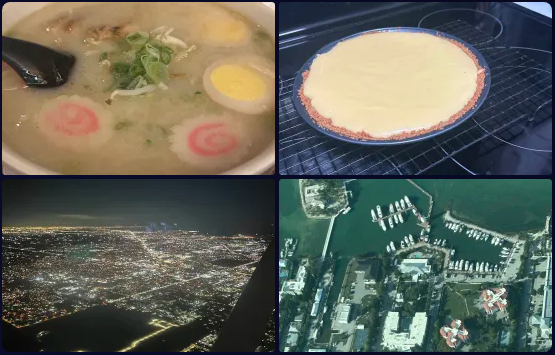
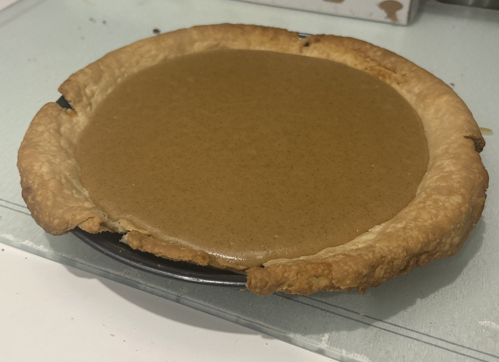

some things you should keep in mind when browsing the blog. i cover a lot of personal
topics and vent on here, alongside my normal blog posts.
this is your first (and final) warning, because i may forget to put them on each individual post.
important
tag filters
@kaiasei
Amanojaku
dear pile of words that i vomit onto the internet,
thank you for existing!
random bullshit below :o
read more
cosplay is going well.. more sanding and painting busy busy busy
i have convinced a friend to also cosplay homestuck with me... miraculously!
KARKAT INBOUND
alsoo i have to get injected with bullshit every couple of weeks now so my body wont
keep hurting itself (literally), thank you immune system! i guess its better than pills every day, but
im really not happy about it.
i worked on music the majority of the day today, and while nothing i wrote particularly
stood out to me, it was a good creative exercise as always! i need to work on drums though, i
really suck with setting up solid rhythms, just never been good at it, despite the years in band/music practice
>.>
we all have weaknesses i suppose.
i think im going to play minecraft or vrchat tonight, as i want a break from all the "work" (music). though, ill toss both of those
if my buddy steven plays tf2, ive been quite enjoying that (im pretty sure i wrote that in the last post though). i wanna see if we
can get more people on though, it could be fun! (im looking at you kris PLEASEE)
also im having baked potato and chicken for dinner tonight, as such, i am a happy girl (unbelievably rare scenario)
until next time! ~<3
hello diary, i have struggled for a good week trying my absolute hardest to not lose it!
read more
post-vent hope is setting in. gave into the despair a 'couple' times last night,
dealt with some very rude individuals. but i can
put that all aside because i know it will be okay. i hope it will.
im feeling a little better every day and it has not yet reached it peak. being aware of this shit
and seemingly not being able to do anything about it really sucks, but at least i can prepare
myself. but here is an upadte on my life as of right now!
my brother moved out of the house today, which is saddening to me, but understandable. i can only wish
him the best. he hasn't gone too far thankfully, but still, he's not home.
ive also started prep on a dave strider cosplay for a con this summer, exciting! im making the time tables for a
prop and it feels so very wrong use destroy records for this, at least i got them both for like a buck
each lol. also for homestuck, ive been reading so much more of it, its a very nice and
fulfilling distraction!
some other happenings, last night (this early morning) my sleeping was so off. i thought about going to look
at the stars, but alas i was too tired. tonight i will bring out the telescope though! i want to look at
venus and saturn.
ive startking baking bread weekly! my parents really like the fresh bread and its healther than store bought bread so
they encourage it, and the baking can be stress relieving (did i spell that word right? idk). i plan on a new dessert
recipe this month, maybe a carrot cake? or a lava cake? def a cake. alsooo, my friends are coming down for
said con! which means i can make them some butterscotch pie ^^ i know they really enjoy it and its one of the
few ways to express how i feel about them all.
yesterday i went shopping for clothes which was a little excruciating, but i got through it. something something
the trans experience. you get the idea.
ive also been playing minecraft a lot recently, on a small server with some buddies, but usually not in
any calls. sometimes the occasional youtube video. it's been relaxing.
all in all, this summer its going to be the toughest battle of my life! but im willing
to fight it. i will keep a positive attitude throughout most of it if possible.
im tired of people telling me that everything i have to do is in relation to the length of my life.
i dont care if i live to 25, or 30, or whatever. all that i care about is if im happy at the end of it.
lost in time
forgotten and ignored
out of place
abandoned by the world
i watched as i sank into the abyss
waiting for a hero to break my fall
’till i realized there’s no one that could save me
but myself
i can’t depend
i’m on my own
forever, ever, ever, and forevermore
i reach out my hand to an empty void
i search for the answers of an unknown world
i write out my life as my story unfolds
i hope, someday i could save the day
i cry out for help to a silent abyss
a losing battle with no end in sight
still i will try ’cause i know i’ll survive
i hope, one day i can be the main heroine
whoa~
left behind
out of mind and out of sight
still, i stand
’cause a heroine never dies
i won’t find my place, ’cause i’ll create it
a miracle waits in front of me
little by little, i can save the world if i start
with myself
the reflection on the water surface
was the hero i met in my dreams
how many times
i’ll save my life
again, again, again, again
again, again, again, again, and over again
i reached out my hand to an empty void
i searched for the answers of an unknown world
i wrote out my life as my story unfolds
i know, that soon i will save my life
i came to my rescue and fought till the end
’cause this story still has a chapter left to write
stood strong until i took a step back and saw
that i’ve already become the main heroine
whoa~
“even if i’m okay with being in the sidelines
even if i’m fine with being an afterthought
even if i’ve accepted being outside of the spotlight
it gets a little tiring filling the supporting role, doesn’t it?”
“although it doesn’t seem like i’m doing something of worth
although it might not look like i’m doing something out of certainty
although it may not feel like i’m doing something heroic
i know i’ll have touched at least one heart, at least one life”
“but what is the purpose of the main heroine?”
“is it to save the world?
is it to save just one person?
is it to save myself?”
i offered a homeless person some food from chipotle today as i had lunch, they declined it, as someone a few minutes earlier,
not to my knowledge, had promised to get them food, a little later i was strapping my skates on again, she arrived and gave him
the promised meal.
following this, i nearly clipped a butterfly while on my way to miami beach, oh yeah i skated to miami beach from my home.
roughly 20 miles, again. screamed lyrics loud enough people in cars were looking at me.
i saw someone graffiti "hi friends!" on a fence, which felt oddly sweet. i wish i had gotten deeper into graffiti. i used to
spray and tag the side of the interstate near my house during high school. they have since covered it up.
i almost gave up nearing the end of my skate, the distance was wearing me down, but i pushed through. as i type this up,
my right leg aches, and my breathing feels strained. i also nicked myself on a road sign accidentally, those things are sharp.
i did not it expect that grabbing it would slice at my palm a little. shoulve worn my gloves. probably was not a good idea to skate most
of this on barely any rice and chicken, and a bag of gummy worms, but i did it anyway.
pushed myself today to see if my body would fail, all i got was a headache and stomachache.. and that right leg ache
i need to shave my legs again, they're getting to a point im hating looking at them, hate that i gotta do this shit weekly.
i didn't ask to be born like this, but its whatever. wish i was born a girl.
vented pretty hard on twitter today, might relay that message here, but it would be pointless to do so. these posts are mostly
written when i have the space, not out on a whim, unlike the latter.
i was gonna crash at my grandmother place on the beach to avoid facing my parents tonight, but i ended up going home
anyway. i want to sleep in my bed and
fuck my computer
.
tomorrow im gonna go thru some old clothes and donate what doesn't fit me anymore prob.
today has been difficult, ugly, and exhausting. tired of it. i will probably be going on vrchat late into the night to fulfill
my social needs because i do not want to talk to anyone i know. that comes with more than just talk, theres a relationship of
some sort there, and i'm just not in a place where i can show up for that, if that makes any sense.
also i passed 300 deployments on my github to this website, which is cool. i am still considering retiring this website, but right now
its one of the few things that i feel i can fall back on in spite of life.
i woke up quite early, before anyone else in my house.
i had some fried eggs for breakfast, didn't really eat anything for lunch, and had a big bowl of soup for dinner. tomato and bell pepper soup.
i threw some onions in there, and had a sandwich on the side. it was good.
i wish to get lost, lost in whatever physical space that will help me get lost in this mental space.
i havent much else to say here, have i now.
anxiety
#puke!
@kaiasei
hi
i fucking hate her
#trolled#i was asked to do this
@kaiasei
we are all going to die
you might not be able to save the whole world, but you sure can be a light in someone else's
read more
when the world is definitely ending, what are you going to do?
you're going to enjoy the time you have.
you're going to be in community.
you're going to play your music
you're going to make sure there is life and love even after you're gone.
who are you going to be?
you're going to be someone of worth
someone who has purpose.
even when you know your whole world is ending
it may feel like you're a nobody,
like you cant do anything to change anything
but you have so much to offer.
bad mental health day! bad mental health day! bad mental health day!
bad mental health day! bad mental health day! bad mental health day!
bad mental health day! bad mental health day! bad mental health day!
bad mental health day! bad mental health day! bad mental health day!
bad mental health day! bad mental health day! bad mental health day!
bad mental health day! bad mental health day! bad mental health day!
bad mental health day! bad mental health day! bad mental health day!
bad mental health day! bad mental health day! bad mental health day!
bad mental health day! bad mental health day! bad mental health day!
bad mental health day! bad mental health day! bad mental health day!
bad mental health day! bad mental health day! bad mental health day!
bad mental health day! bad mental health day! bad mental health day!
bad mental health day! bad mental health day! bad mental health day!
im going to lose my fucking mind i hate this
i am filled with feelings that i hate, i feel gross and not like myself
im everything that i want to not be.
im bashing my head against my desk for simply existing today. i am deteriorating.
Below is an excerpt from a video by Horses I thoroughly enjoyed watching recently! I suggest you take the time to watch it if you please.
"Humans want to be happy, and we want to be loved. Once again, we have worthwhile pursuits which can paradoxically lead us astray. As we
quest for happiness, we do the disservice of ignoring the true reality of our experiences. We reject feelings of defeat, terror, hurt,
and suffering. But we must embrace these things if we are to understand who we truly are. If we are to see what we are capable of in our
darkest hours, it is through this understanding that we can come to see failures as not leading us off course but giving us opportunity
to see what we can accomplish. We can realize our pains and darkness and thus recognize that we have surmounted them. We have done so
perhaps with the aid of some people, but the apherism of leading a horse to water does come to mind. We have surmounted difficulties
through the incredible support and capability that we have within ourselves."
#life#heartwarming#youtube video#horses#please stop reading these hashtags lol, or dont, i dont mind. i actually find it nice that they are read.
@kaiasei
learning to not be afraid, late night ramblings
these last few days, if you couldnt tell, i have stayed up quite late. it has been an experience i think very very much needed.
either that or im actually in some sort of psychosis, which id rather not be the case.
read more
during high school, i would spend lots of nights by myself. a nice break from the chaos that was happening at the time.
i havent "ruined" my sleeping like this in a really long time, but its nice! i've spent a lot of time reflecting on myself!
(even if it may not seem like it). been finding ways to move on from things that have been holding me down has been rough,
and im not entirely sure if even have it yet, but i must tell myself that it will be okay.
i've cut ties and moved on from some people that have done me wrong in the past,
i've accepted the reality of some of my situations,
and most importantly of all to me, i am trusting people more, specifically my friends!
i feel like i dont know how to have friends? it's something i kinda always struggled with in school. i knew people but,
i didnt really have people i considered friends. so i genuinely have no idea what im doing.
its just scary, i really dont want to fuck up. the few times i feel like i have had friends i get way too attached to them,
and then they kinda just space themselves. despite that all, and being as confused as i am, im gonna try again even though my
body gets sick at the thought of it!
i dont have anything else to say right now, my mind is very much racing still, but im doing better! i mean i had the drive to actually
create some music! i dont know if any of what ive typed out will make any sense to anyone, but it makes sense to me
i love my friends, sometimes it feels like they're the only people i have... i wanna keep them around. (even if that means my twitter being
given...)
it didn't end up raining even though the weather said it would. so i didn't end up going skating :p
read more
my day was spent almost entirely in my room, only going out to get food, confining myself to a small space and trying to force myself to be creative, didn't
really work in my favor that well.
started working on some part for the site, a special little bit of writing, but it isnt done yet. though i ahve a part that i dont plan on using, so i will put it
at the end of this post.
later during the day, i decided to stop trying to force myself to be creative, and i went on vrchat for a bit, stumbled across a handful of people (like 3 lmao) and we
talked for a while. one of them was voluntarily mute, the other a great singer, and the last was pretty chill and confident in himself. it was a nice group, and it felt like
i was able to actually be present in something rather than just watch life go by from the sidelines. maybe im just so damn reserved that im not really used to talking to
people all that often, but it was nice to, even when they understood that i wasnt much of a talker to begin with.
the (in?)voluntary mute person, Somina, their presence was very comforting, after everyone had left and gone, they still would not say a word, but they gestured. A few nods and smiles.
I understood them without them ever speaking to me in any way, I understood why they are the way they are. I told them I appreciated their presense greatly before I logged of from the last
of the bunch. This is the writing in Somnia's profile bio, the only words I have ever seen from this person:
"An often solitary observer. Wandering... Watching
Those found lost or curious may find myself as a brief companion.
Waiting for kindred souls to find this one lost, yet hopefully not forgotten.
Not the best with words, so I often don't say much. But I will always try to listen."
Somnia, if you for some reason ever read this, our brief encounter (for the few hours it lasted) felt like a lifetime of understanding. Your presence is valuable, and I hope others
do come to this same realization I have. I cannot wait to see you again, if the future will allow it!
Lastly, heres the 'poem' fragment that is going to go unused, I'm not a writer by any means, I just write these things to figure out how to put my emotions into words so that
maybe someone can understand:
"You hold it, it shifts. You name it, it shifts.
It doesn't want a name.
Days, Months, even Years to finally catch it,
Yet your grasp amounts to nothing- you're left holding nothing.
Your hands close on nothing.
This pain, doesn't have a home, nor does it want one.
What are you left to do with it?"
i had a great day! some bumpy moments, but good nonetheless. i have some exams tomorrow, but i know i will
do well on them.
read more
i just finished inhaling a bag of swedish fish, and drinking a glass of milk. yes its a weird combination but shutup. idc.
i made some progress on homestuck earlier today! ive been reading it bit by bit but today i think im nearing the end of act III (finally). hopefully
ill have more time to read because im almost on for my summer semester! which is a much lighter courseload.
got some really good frozen yogurt today, and obv the swedish fish from earlier. yummy yummy. i also had a burger for dinner. dont i have the best diet in the
world?!?!
it doesnt sound that healthy but to compensate for it, i think this friday or saturday, ill prob rollerblade 20+ miles again to miami beach. its a good fallback
option to clear my head, figure out what i want to do, and generally just get inspired for anything creatively. specifically these long distances keep my mind "busy"
on skating while letting my mind simutaneously free itself from the constant expectations and the reality of my life. its like a healthy escape for me.
i just wish i had a friend to skate these long distances with >.>
it would be so much fun! but not many people i know actually rollerblade. maybe i can compromise on walks? or biking? idunno.
i kinda miss when i was at school up in daytona beach, and i would rollerblade with a couple buddies almost every other day, just for fun. we wouldnt even talk sometimes, we'd just go and go.
anyway, thats all for now, i really gotta fix my sleeping, so im going to try to wake myself up early "tmrw". nighty night!
i got up from my computer to put on my pajamas. i was taking my shirt off (to put on my pajamas)
in front of the mirror and as my hair fell down and i saw myself without a shirt on i felt so happy
(dude i want tits so bad)
but like holy shit thats a girl in the mirror! wHY IS THERE A GIRL IN THE MIRROR!!!!
does part of it have to do with that i flattened my hair today? yes. but even then like, it wasnt
brushed or anything right now, like i just took off my headphones. my hair just looked really good,
i looked really good... and i just started smiling at myself. :D
i think this is the beginning of a few positive weeks for me. i'll make it happen.
so when i was going to bed last night, the pain from breathing something in
was getting to the point of okay i think im harming myself.
it turns out that the reason for this was because of the failing electronics in one of my
electric pianos that is stored under my bed, and the place where my bed is doesn't have much
circulation.
needless to say, i was probably poisining myself with like lithium or a leaky battery or
SOMETHING.
anyway, i had a presentation AND a performance today and while i expected the worst, it was not all that bad.
i freaked out a little during a presentation on business and marketing, i froze up and started panicking,
but my teammates actually stepped in and helped. i didnt get that bad of a grade! (low B >.>)
and my jazz performance was today too! that was a little less stressful, because ive done many of them in the
pase before. but i couldnt find the room we were performing at like, 30 mins before the doors wouldve opened. but at the
end of it, i got there in time, played well, and only messed up a tad on whiplash, so all in all, a good performance.
my parents were also there so it was a little better.
anyway, tomorrow is a relaxing day, and thursday will be a little busy, but i think the brunt of the semesters end was today and will be (partially) thursday.
have a good night!
#life#music#jazz#performance#social anxiety is killing me
@kaiasei
update
it got worse
read more
i dont even have the energy to vent on here
my mind is racing,
i feel lightheaded, dizzy, nauseous
and i wanna die
that pretty much sums it up. im gonna lay down or something.
happy 4/20, also it thunderstormed today! it was so nice and comforting, like actually so much so. it made me very very very happy.
i bought some music today, which is always a positive, also my dave strider like keychain charm thing came in today i am so fucking
happy you have no idea, LIKE YAAY, ill attach the image of it to the post.
i also cannot shake the feeling of worthlessness today which has been ever present, but what can ya do, it just really sucks. feels like its trying to
drag me down, all i can really do is distract myself.
been listening to castle funk by toby fox most of the day today too. (not embedding as vid, im too lazy)
look..? more
the artist is @chrisriin on twitter, please check him out!
woke up pretty late today, but immediately went to cleaning my room, and then the house, and then myself, and now all my clothes. now all that's left is my clothes
in the wash!
im gonna go see project hail mary in like, 30 mins, so im pretty excited for that. afterward im gonna have to finish up some schoolwork that i have left before
the semester ends, and then I will be all good. completely free!
go you girl, get out of this rut, im on my side now
gonna go get dressed for the movies and stuff, then i think after i do my schoolwork, ill work on creative projects. speaking of, i made a new song and i didn't link
it in the last post, so heres the embed! (both youtube and bandcamp)
fyi, the bandcamp one is the "final" version of the audio render i have yet to reupload onto youtube :p
listen more
#life#music#step forward#NOT negative post#only up from here (lie)
@kaiasei
OKAY HI HELLO
forget EVERYTHING i said yesterday, i have eaten food and now feel significantly better!!!!
read more
the last few days felt like hell, but at least i wrote a cool song out of the slump. im feeling much better now that i have had food put into my
body though!
being forced to fast for 2 days and not eating the day prior to that really really fucking sucks. but i seriously think i am okay now. though,
i was a piece of shit, getting set off at every little thing like my shirt was on fire.
anyway, just wanted to clarify to myself that its okay now. im gonna go play a video game now. much much love to everyone and everything. :3
this is a very bad vent post and i would rather you (whoever you are) just skip this one.
and for that matter, any other post that gives you a warning or is tagged with the vent tag.
read more (final warning)
i dont even know anymore man
i have tears in my eyes, im angry, sad, confused
my day isnt going well, i try to keep a positive attitude
and then it gets struck down even fucking harder
and then i get home! to my mother doing the same bullshit and making even more problems
and THEN people wont respect my privacy and try to pry my entire day out of me when i clearly
mentioned i did not want to be bothered.
its like
my problems aren't for people to deal with, i know that. i dont like making my problems something that people have to deal with, hence the whole quiet thing.
but it feels like im getting pushed to the edge, constantly nudged, i dont know why i feel like this.
can i please just have a break. im slipping more and more man and im trying, im really trying to fucking focus on the positive
im starting every day with a smile, and then it gets chipped away by every little thing, every little interaction
im just so drained, honestly i dont even know if that word can cut it. i feel like ive been ripped out of myself. i just wanna fucking ball up and
cry. i dont understand how people go through life like this, its so much. its so overwhelming and every moment is a liability.
im trying to not go overboard with things i do when i get like this but the feeling of needing to do something extreme keeps growing. i dont feel like
i have control over my life, and because of that i feel like i need to do something with such a large effect on everyone i know to prove that i am actually
even real. i vocalize my perspective on these things not in a "oh look at me im not okay" type of way, but as a way for me to process what im feeling because
saying im going to do something and not going to act on it, is better than actually doing it. and it helps me avoid doing whatever it may be.
though, apparently my worst fucking fear came true! my friends think its "performative". so all my feelings and emotions are thrown out in the gutter
and it reinforces the feeling that like everyone i know distrusts me, like people are constantly out to prove me wrong in everything.
i didnt ask to feel like this, and i dont like it man, i cry every other day and i can never pinpoint why. ive expressed this a multitude of times for MONTHS
at this point on here. i just want it to all be done already.
i so desperately want to make posts on here that are fun, that show me doing cool shit, experiencing new things. but it feels like ive built up these walls that
trap me in here to the point where i cant even do that.
i am tempted to take this site offline, and the only thing stopping me are the wishes of my now dead friend. who years ago, said quote "you should keep it up, i
think its cool".
...
im sorry you have to read this, whoever is. im really sorry.
...
what seems like seconds for you in this post, is minutes for me on the keyboard. having said that, after some consideration
maybe it is a good idea to offline the site soon. maybeee that will help with everything? im just trying to figure out why i
feel terrible all the time, like there has to be a reason, right?
...
im not even going to sugarcoat this last bit here that im going to type out.
summers are never the best for me. i have never had good experiences in them, and every year it's as if it gets worse. though, this time
as the summer approaches, it feels like im going 9000 mph towards a wall and i cant do anything about it. like summer is going to be
the death of me.
...
it rarely feels like people ever want to talk to me, as if i am a fallback option. throughout school it felt like this too, and maybe a lot
of my problems stem from that and me keeping to myself throughout those years, but through school no one ever seemed like they willingly wanted
to talk to me. i always had to be the one to reach out first, and yeah they would talk or hangout or whatever after that, but it always left a bad
taste in my mouth. like my presence didn't matter to begin with. indifference.
...
its hard to tell people i dont really value my life at all, im choking up and crying at typing that but i dont know how else to put it
man. sure theres people that care about me, sure i have ambitions and stuff but like, i've struggled for years and i havent seen a sign.
those select few have been a guiding light, but even that doesn't seem strong enough, yknow?
i wish i could tell more people what i type here but its just not something that would put me in a good place. i want help, not to be shoved in
a mental hospital. so yeah, im scared. and i know as soon as someone will ask me whats wrong, i will freeze up and subconsciously throw it all out of my mind and just
say that i am okay.
this thursday i have to go to the doctor for a procedure, they need to see why certain things keep happening to my body.
the chance of it being something cancerous is
very low, but that is still non-zero. i feel sick to my stomach that a part of me is okay with that slim chance becoming a reality.
this is probably the most depressive post i have written on this blog to date. reasonably so, this is the worst i have felt. ever. :(
i hope that this, whatever this is, will end soon. (ideally not by my hand)
#placeholder
@kaiasei
thoughts
more
i keep seeing myself from a step behind
not enough to lose track
but always enough for me
to notice consistently
as if every little thing i do
i am just now arriving to watch
as if it already happened
i dont ever interrupt
she moves through these things with haste
deciding without hesitation
cleanly and efficiently
i think she trusts that
i will make sense of it
afterward
so i follow
quietly, with unease
i follow,
always a little behind
it works well
though, sometimes
sometimes, the distance collapses between me and her
without warning,
i am left there
just there
the heaviness becomes more prevalent
stepping back into something
so volatile
and then it's gone again
but it leaves a mark
and the part of me that stayed said
that it was real
i tried to dismiss it
filing it away, burying it
in the mountain of what was
but the part of me that stayed said
you do not get to call that nothing
the world continued, continues
unchanged, as if no difference at all
but the part of me that stayed said
i was inside of it
not behind,
not after,
inside.
i don't know how to hold onto that
i don't know if i am supposed to
but the part of me that stayed said
you haven't disappeared.
you are still here
not all at once
but still here, nonetheless
and i think that's why i keep looking back
in recognition
because there are moments i can still point to
and say
that was me
not the reflection
not the delay
and maybe i don't need to hold onto all of it
maybe i was never meant to
i've seen you before
in the things you forgot
in the moments you failed to keep
you dont remember them
but miraculously,
they remember you
and somehow
you are still here
to notice that
#poem
@kaiasei
plushie hugger
i love my taiko plushie, it's perfect huggable size
read more (vent?)
i feel pretty bad.
my schedule for the past few days is wake up (fairly early, like before 8AM) do what i have to do, go to work if i have it
then classes (if i have)
go home
and then sleep the rest of the day away.
i know im ignoring responsibility by doing that, and knowing that doesn't make me feel any better.
everything i want to do related to school is starting to stress me out more than i could imagine, and i have to do them, or else i'll never
get anywhere in life.
after all that sleep i just get up, eat like a sandwich, watch youtube for like an hour before knocking out again and repeating it. the only upside is
that i wake up early i guess.
i feel like such a fucking loser writing down my schedule and it just being THAT. these fucking episodes should have stopped years ago, the only time I
recall it ever being this bad is middle school, when it got to its worst point. i want to just ignore my emotions, i want to ignore my feelings. i didn't
ask nor do i want to feel like this. i feel like an attention whore, a fraud, a fucking loser. i feel gross for feeling like this, i feel like im just floating
on through life not making a single choice of my own, existing just to exist and waste space. im not okay man, i want someone to talk to but i cant bring myself to
talk to my friends umprompted about any of this, no matter the reassurance, and ill just yell at them anyway, hecne the whole self-isolation thing right now. i want to
talk to a therapist but im too much of a bitch to get one myself or pressure my dad to help me get one sooner than later. he said he'd help and i just don't think it will
ever happen.
i dont want to feel better temporary after venting on this fucking blog, i come crashing down every fucking time. i want to feel better permanently. im so god damn tired of this,
that i just burst into crying, it even fucking happens at work where i am hiding in THE BATHROOM.
to cry
i want to explain it but i dont know how to anyone I DONT FUCKING KNOW HOW TO EXPLAIN WHAT I AM FEELING i dont fucking like it i dont know what it is I DONT WANT IT
I DONT FUCKING LIKE IT.
im weak. someone would have, SHOULD have, just been over this already, yet i dwell on things longer than i am supposed to.
do i know what i even want for myself?
...
anyway. here's a song that has been helping me get through the week. i dont know.
thanks for reading this, ill probably go back to shutting myself in because its one of the few things i can find comfort in.
i sound like a fucking cornball, i know people will make fun of me for it, i just dont wanna see or hear about it.
hihi! site was offline for like a day or two, ill explain below. i took a small lil break from editing the site/posting because of needing to process some stuff, but im back now!
read more
hey hi so, i need to tell myself that i dont owe anyone a coming out. partly the reason i lightly disabled my site was because i was being made fun of by some
friends. its better now but, in the moment, for that short while it really fucking sucked.
pushing that aside though is some update on my music stuff (school)
for the youth symphony here where i live, i wanted to join but i need to audition, and auditioning now would leave me like 3 weeks to learn the music they are playing, so im waiting until fall semester, which will allow
me to prepare so i dont put myself down over thinking i cant do it, i know i can, i just need practice.
fall semester i will be also taking lessons and possibly transferring to a different campus that has better music professors.
...
this last week i have felt pretty on edge as well, so i took a step back and focused on myself for mostly yesterday and i feel better enough to
(maybe) talk to people. its not fun thinking that i might burn bridges because i cant watch my mouth when losing it. wouldnt be the first time though!
i just got home from work as well so i think im going to play some video games and then practice my clarinet.
there more to talk about, but i got brain fog (i should probably get something to eat now that i think about it)
#personal#life#hi you#i know youre reading this#okie bai
@kaiasei
WE ARE SO BACK
forget EVERYTHING i said yesterday, even though i meant most of it.
well, i feel better, but lets not exaggerate. you and i know damn well im still a fucking mess, just... less of a mess today!
read more
allow me to preface this by saying that there is probably typos throughout this (and future) post, and for a little while itll be like this.
i have to get used to the new keyboard, the actuation point is set so high and i dont feel like changing it because i like the responsiveness.
so, today was much better than yesterday, even though i didnt want to wake up early. i had some good food, played some video games,
rollerbladed, took a nice long bath,
all of it. i did my best to make my day better than the last, and it worked for the most part.
i feel much better than yesterday!!!
i bought this bag of candy earlier cause i was gonna scarf the whole thing down, but it ended up sitting on my desk and i actually got food and stuff, which
definitely did something to improve my mood. do this more kaia!!!! for fucks sake you need it girl.
realistically though, nothing is perfect. i still had a couple bumps today, and a few quiet moments to myself that weren't all sunshine
and rainbows, but it was better than before. everything isn't "solved", it wont be overnight, this i know. BUT, im gonna take the few wins
i get and strive for more.
also, i read some homestuck today which was also a nice dsitraction :3
alsoooo also, ill make a post sometime tomorrow (?) maybe with the Artemis II launch video i have, maybe some other stuff. ive also been working on my yearly
video (again) because i cant stop scrapping it.
lastly, i need to work on my way of processing emotions because i dont think yelling songs is the best. my throat hurt a lot this morning lulz (its better than puking
at least). i need to work on not second-guessing everything, being a little more confident maybe would help. i feel like im always in the wrong, unless im agreeing with something
that is actively going against me, effectively punishing myself for no good reason. anyway anyway, stuff to work on.
agh! theres's so much i wanna type and ramble about, but i also really want to get off my computer. im kind of tired.
you fill me with hope.
okay, goodnight!!
#personal#it will be okay#i believe so#again, thank you for trusting me
@kaiasei
quiet
im taking steps in a direction
read more (please do not, this is your warning)
im the only one home today. my parents are out on a small vacation, my brother is out hanging with one of his friends. i am here alone,
although i like the quiet.
my mind is both overcrowded and foggy.
you know, i have people there for me. i know this, and i am aware of it. i still just do not think they understand. and
here goes the haha so corny "they
will never understand me or get me". i dont know. i feel like a chore.
i skipped out on d&d today again as well. i feel like i am going to yell at people if they get on my nerves, so it is best i distance myself.
...
i have work tomorrow. i didn't end up going yesterday, i just called out sick, and i didnt go today. since i had scheduled myself off for
today. i feel
like my coworkers are going to hate me.
im listening to wind chimes outside my house right now, my window is open and i can hear the breeze, and feel it sometimes as well.
i dont want to talk to anyone but i will complain that i feel isolated.
im even getting self-conscious about writing my own thoughts here, in a place i designed to be able to write without thinking of that. im spiraling.
i wrote some music earlier, i didn't write a lot, and it made me feel worse. but at least i did something today.
...
i just prove people right by acting like this. being all mopey. though, its either this or me putting up an act to appease other people
around me. its so difficult.
it feels like i dont deserve friends if i am going to push them away. it feels like i dont deserve any of this and all of it at the same time, i dont get it
everything is a mess, no matter how many words i type, i speak, or i hear, i fail consistently. patience only goes so far til' you eventually get sick of me
...
i never should have opened up to anybody, all it has done is made me more aware of my emotions and how fucked up all of this really is. if
i kept ignoring it all, maybe it would have been better?
i have no more stray thoughts to just list here, i might just go to bed now. i want to cry.
aren't these things supposed to make me feel better?
read more
the artemis launch happened, it was cool. i also went to a music show with my friend brandon which was also fun.
both instances of these outings i couldnt help but feel like a burden, just a weight my friends are dragging around that ruins the mood. i try
to not let it get to a point that its an inconvenience, last thing i want to do is talk about myself, in public.
on top of this, i couldn't help but realize i dont enjoy those things, or at least i dont think i do? or im starting to enjoy things
that i do for fun, less. like im forcing myself to enjoy my hobbies. and if i stop doing these things, ill be a nothing person.
just a boring, good for nothing, waste of space and money.
i dont know if that makes sense.
going to the show was supposed to make me happy. going to see a rocket launch was supposed to make me happy. those two things shoulve at
LEAST cheered me up. yet i remain here in a worse state that i started. i dont feel like i belong in those communiies anymore, it feels
astranged, and as if im being judged from every crevice of it all.
worst of all, that feeling is starting to creep its way into my musical endeavors as well.
i cant shake the feeling that im stuck.
...
i dont even want to start writing about my parents here. too much text for one post. all ill leave it as is this:
you claim to be for me, but when i do things for me, or have opportunities open up for me, you all of a sudden do not give a single shit.
...
my chest feels tight, my eyes heavy, and the strength to endure, weakening.
waiting waiting waiting, however long shall i be waiting?
read moar
i ordered a new keyboard! a keychron 100% one, i cant wait til it gets here!
all i have to do after that is wait til the celeste keycaps are back in stock on fangamer... i need them they are so cute. i cant wait!
anticipating and waiting for things can be fun, like im still waiting on those vr trackers to get here in august... it will be actually awesome. and i can't
wait to hang up some art on my wall! two really cool pieces. (ill def show photos when i get them hung up.)
sometimes waiting can suck tho, i especially am NOT looking forward to summer. every year, every summer just drags for me, pretty bad. i have plans and im ready to try and counteract that,
but i suspect it will happen again. the latter half of the year is always comforting, home-y. spring is okay too i guess, but for me its the summer that just- ough, yknow?
definitely NOT wanting that to come around the corner.
all in all though, patience is important, yadda yadda, and whatevs. a valuable lesson learned through my baking endeavors id say.
alsoooooo i reach 1000 visits on my site today! thank you eric for being the 1000th person, lulz. i'd never thought this little site would get
that much traffic, but to my suprise, it has!
and finally, last night was rough for me. not a pretty sight or situation was going on, and i didnt really want to be around any of it. although,
a combination of good music, and good company can make for a suitable distraction from messed up stuff. haven't much to add onto that comment, i
just find it important enough to note in my little entries here.
lets end with something cute, so here is a photo of my bird from... right now!

#life#im currently playing vintage story#thoughts#big guy!
@kaiasei
a reorganized room
hey its been a bit! things have been... up and down. but lets focus on the up and not the down, because theres enough of that!
read read read!
after a little bit of a wreck a couple days ago, i rearranged everything in my room, and deep-cleaned it, so it feels nice and fresh. bonus, my
computer screen doesn't face the door anymore which is a bonus for privacy :D
a couple days before that happening, i rollerbladed over 20 miles, for 5.5 hours straight! it was super fun, and freeing. next time i need to be sure to eat before i do so,
i think i was pretty limited because it was all on an empty stomach... regardless, it helped ground me and clear my head for a bit. just zoning out and skating
for a while. after i had made it to where i was headed, i ended up hanging out with my buddy matija and we played some ping pong and some bowling, i am much better at the former.
fast forwarding to now, i have been playing vintage story with my friends, which has really been a blast! a feel a lil like theyre forcing themselves to play with me, but
the also seem to be enjoying the game, so it has been fun! similarly with video games, ive gotten better at tetris because its all i play when i am bored
at my desk and want my hands to just do something.
all this has been during my spring break! its nice to have a moment to myself, even if im not doin all that much.
next week i plan on going on a flight with my friend jose again, this time north to cape canaveral to watch the artemis II launch! im going to bring
my nice camera and hopefully catch some great photos. on top of this, like literally a day or two after this, im going to a show with a brandon, dead butterflies! looking forward to
that too.
i know ill be pretty tired and anti-social after all of this outing, but i know it is good for me, ive been trying to not get as "tired" as fast, because i know
it can be a little bit of a buzzkill sometimes to say i wanna rot in my room as opposed to anything else lol.
thats it for my little personal update, im not going to get into the bad because i simply do not want to! the next post i make will probably be a bunch of photos of
the rocket launch, it will be cool :D
#life#:3#take it slowly#and do better#you got this
@kaiasei
one step closer
im so tired man. an exhausting and uncomfortable day, mixed with terrible feelings and emotions, a wondrous combiniation of hell, brewed especially for me read more (vent)
it gets to a point
it gets to a point where i cant just constantly keep shit to myself.
...
how many times is this going to happen?
every night?
every fucking night?
even when i of all people, look at you and ask you to stop you still don't.
it probably never got to your head because you were wasted anyway right?
maybe you wouldn't always be so envious of others if you actually cared for yourself.
instead you make promises to yourself and then drop it 3 days in and get into this shitty cycle again.
"at least it's not crack or anything worse." i end up telling myself. me, justifying YOUR own addiction for you,
because YOU can't bother to take it upon yourself to do better.
and ive tried to do anything i could, anything that i thought would make a difference, but every other fucking day,
there's two more wine bottles on the counter. every other fucking day the room is going to smell like cigarettes, and
when i finally mustered up the courage FUCKING SAY SOMETHING, you were too sloshed to even realize who was speaking.
and then you blamed your reasoning for this on me and him.
the worst part? i feel bad for starting to not care anymore. even though you never even cared to begin with.
maybe it's cause you've seen me grow, maybe it's cause im "your baby". you don't even know that i'm your daughter.
i feel so uncomfortable around you, that im reluctant to tell you how my day went, or how i'm feeling. and you're lucky my brother
puts up with it, and he knows the distress that it causes me.
i can't respect you.
i can't trust you.
it makes me sick to my stomach
and i hate you.
i'll resort to distracting myself in any way possible in order to block you from my mind.
putting pillows over my ears, locking my door, calling people til i pass out, whatever works at this point, because clearly words just do
not work any more.
------------------
i try to be kind. i really do.
i try to be considerate, i try to use my words before all else because i am not proud of who i was before now.
im not perfect, but i try.
angry is not something i try to be either, i dont have enough room in my own mind to sustain that healthily for any duration.
but it gets to a point.
...
i dont want to yell at anyone, it makes me sad and ill just end up feeling worse. im actively processing my emotions as i type this shit out
to prevent myself from snapping. this stopped being a blog post and is now a stream of consciousness that im not even sure im going to hit the
publish button on.
scorched earth. i went full scorched earth on a group of friends in 2020 and i remained by myself for a year and a half afterward. a year and a half
of me, alone with my thoughts of what i had done. it wasn't entirely justified, i know this.
i can only keep apologizing for people, to people, for so long though.
maybe its my fault for expecting too much? maybe i should hold myself more accountable? im not entirely right for everything ive done. but people
im teetering on this edge of crashing out and being a sensible human being right now. my mind is going back and forth and i am struggling to
put this into words but i am TRYING.
i am always TRYING but never DOING. how many more times can i TRY before i actually AMOUNT to something. because maybe i am just not ready for
any of this.
maybe i am just not cut out for any of it.
maybe i was never really ready to try and maintain friendships again.
my anger gets turned to sadness, and its the only way that I know how to deal with this. maybe i should stop mindlessly typing and just
turn this shit off.
im not tired, i dont want to go to sleep.
im tired, of emotionally dealing with everyone.
as soon as i pin the blame though, thats where bridges burn.
so i will suck it up and be wrong again, or whatever im twisting this entire situation into.
happy pie day, we will try to stay positive today! read more
i had a pretty bad night and morning today. but instead of whining about it, i im going to talk about the good parts of my day!
i had some really yummy tonkotsu ramen with my dad! ive been writing a lot of d&d stuff, and generally feeling pretty inspired.
i hope to make it up to my friends by playing d&d this wednesday as well!
ive been reading more homestuck, because ive been bored in class. that and drawing teto some more, which i did a lot like two/three semesters ago.
i wish i didnt loose that notebook >.>
i bought lots of music this week, lots of dariacore (xaev mainly), both xi albums (world fragments & parousia), and then a handful of other stuff!
also! my gabriel ultrakill plushie got here, its so awesome.
that is all for now, pretty short post, but we do better! (foreshadowing)
#personal#good day#being positive#ive had 3 bags of candy today i might just be hyper
@kaiasei
regrets, and the mirror
i have a lot of regrets.
if i could rewrite everything i would, in a heartbeat.
read more
if i could be born a girl, i would have chosen so.
and i wonder sometimes
if there is another version of me
walking through a kinder world,
one where i had a voice.
a life where that voice won't hesitate,and i don't hold my own tongue
against the quiet expectations of everyone around me.
a life where i wake up and simply exist,without having to give explanation of why or how.
maybe she laughs louder,
maybe she wears what she wants to,
maybe she dances without looking around first,
maybe she screams those lyrics out loud without aching afterward,
maybe she writes her name without feeling like she borrowed it.
maybe she doesn't have to puke every week to feel like herself,
maybe she doesn't need to remind herself that she has friends,
and that it's okay to not be okay.
but at the blunt end of it all
here i am,
gazing upon the reflection
of what was and what is.
a broken doll laid upon the upper shelf,
broken pieces falling down,
all those pieces that i hold so dear.
i am about to go to bed, because i have classes and work tomorrow. but i felt it was necessary to post something before i head to bed!
i also added a new #vent tag for posts, as well as a little important notice at the top for the content of my blog/diary.
read more
this weekend came and went, stressful nonetheless.
i found out that i can rollerblade a half marathon though! (i actually rollerbladed like 16 miles lol) i think i will attempt a full marathon in the coming weeks,
i really had a good time just zoning out and skating, vibing to my music.
i just finished playing a long session of vintage story by myself, but i was in call with a couple of friends of mine, notably brandon. it was
nice to talk about life and how we both see it. i know neither me or him are really doing well in our own right, but its nice to know that im not alone,
and that he isnt either in this hell. i care about my friends, and it sucks to know that they aren't doing well, and the most we can ever do is be there for them
so i am glad i can.
if you're reading this brandon, i know its rough. talking about emotions can be difficult, i mean i literally had to stop myself from crying earlier in
call because i was thinking about my feelings too much, but we gotta just keep going, make art. its all we can do, even if we
both think it's mediocre as all hell.
in other news, i started slowly sharing my new-ish instagram account with a couple people. i dont really use the app, as a matter of fact, i dont have it. i only use
the web version if at all. ever since deleting my old account entirely, im know a couple of my close friends whom i only communicate with on there have wondered
where ive gone, or at least i hope they've wondered about me >.>
regardless, its time for me to go to bed, ive got work in the morning.
"all we have is each other forever. die smiling thru."
drinking an energy drink and then being emotionally drained is not for the weak
read more
does that mean im strong? >:o
def not, just ate a bag of sour gummies while blaring music in my headphones.
i feel numb and i dont wanna work tomorrow, or participate in d&d, though i am because i know i should.
debating posting this as i write it right now. since im "afk" in call.
i tried to make music today, and i completed a bit of something, but i was so repulsed by it, that it made me nauseous. brandond said it was good though, so maybe
its worth something. idunno.
here is the immediate aftermath of me being happy yesterday
read more
is it sad that i expect the worst when im at my best? i knew i was enjoying yesterday, but all i could do is expect the fall out of it all.
i tried distracting myself with games, friends, videos and then to no avail.
the back and forth strikes again
i find comfort in being alone but i dont want to remain this way. im not a lazy person, i have ambitions, i have stuff i want to do. why do
i feel so lazy though, even when i do them?
the back and forth strikes again
i struggle to speak my mind
the back strikes alone
its raining pretty hard here today, feel like a blanket. im eating a meatball sandwich, and its nice and warm too.
theres things i want to say but i can not say them.
in a safe space, i can not say them.
to people, i can not say them.
in a sapce space, i cant not say them
to friends, i cant not say them.
this rambling has purpose in my mind, you see. indirectly refrencing things that i keep in my head, without saying too much.
being an open book hurts, it always hurts me in the end, and to my dismay, it is self inflicted.
something is so damn wrong with my brain, not creative enough to show it though, so ill rot.
#life#lost lost lost#i wish i could, but i cant say it
@kaiasei
brick by brick
hihi!
it is now the end of february, wow it went fast! it has been a rough month, though. at the beginning of the year i really
thought i wouldnt make it to may, but here i am! struggling and pushing through has made me stronger, i feel it >:o
read more
recently i have had the motivation and energy to make some music, but getting beaten down in the process by my own mind. i still find it hard to accept
things after ive made them, but at least i have something to show my progress, i just dread the amount of practice that i have to put in, but it will not
do itself so i gotta.
i baked a lot this month too! specifically cinnamon rolls geez, i think i made like 48 total this month (batches of 12 haha). last thing was biscuits, this morning!
i made the dough, and let it chill in the fridge overnight, and then gave my mom instructions on how to bake them, because i had work >_>
classes have been going well, too. not much to say about them, but thankfully its a relatively light workload compared to other semesters, so much so that i am
able to finish things usually the day of, unless its a project. i do NOT think id be able to handle a part time job, classes, AND my mental state if i had a big
workload, i would break, burn out, and rot in a pile of failure (literally 2022 all over again I DREAD IT), so im glad thats not the case!.
i feel emotionally okay right now, though that topic is so very volatile.
been buying lots of music too! my collection grows ever so slowly... and it makes me happy.
i dont have much more of an update at this very moment, family is visiting, im doing some much needed computer maintenence, and enjoying my day.
i bailed on dnd, bailed on playing games with a friend, bailed on going to a show today
brace yourself for the worst post i've written ever
unwillingly read more
last night, and more importantly today, has been fucking terrible. and the only thing i could mutter to my parents
when they asked earlier was "i'm tired".
i keep blaming it on my emotions and i know i should get better but it's so fucking scary.
i want to do it on my own but i dont know how, just fucking insecure. there is a part of me that GENUINELY
doesn't want people to help me, turning down help and refusing to talk about my emotions. then the part of me
that wants people to, but twists it into them having another motive, or just trying to shut me up. why does my
mind feel like it constantly jumps to extremes?
this entire thing gets worse when you realize i have pretty bad attachment issues. trans girl can't take a compliment
(big fucking surprise) except the reason is because i know i'll take it too far and immediately get attached. that's what
i've trained my mind into thinking. i know whats good for myself, and i shouldn't subject others to that, also i'm terrified
of a negative response. therefore, i know it's not worth it to even accept a compliment in the first place. don't compliment
me in the first place. i fucking mean it, unless you understand this is the mess your diving head-first into.
that's what i've trained my mind into thinking?
i feel pathetic yet ENJOY spewing all of this out- but i couldn't bare to do it to anyone's face.
instead i'll just push everyone away, avoiding interaction and/or confrontation in it's entirety.
i've done it in the past, ik isolating isn't good but it IS quiet. quiet is comforting, quiet doesn't
have a mind of it's own. without people, my mind won't race.
i write this all in bed, balled up, with tears coming out of my eyes. how performative of me!
emotions too "all over the place" to word anything poetically
feelings everywhere, all at once
a mirror taunting my eyes, my body, my face
a microphone taunting my voice, my words, my capability
there so much going on
i wish to tell
i want to yell
i want to SCREAM
but i don't WANT TO BE FUCKING LOOKED AT.
as i type this, i refuse to go back and edit the content, except for typos. (ironic)
this is just a stream of my thoughts put into words that i want to imagine no one is reading.
except i want my parents to read it, but they won't understand it (if i can't explain it, do i even understand it?)
except i want my friends to read it, but won't want them to speak about it (if you all don't bring anything up, you're basically ignoring me. if you try to help me, i'll just think youre insincere)
except i want strangers to read it, but they won't respond to it (look at how interestingly fucked up my life is, don't you want to see how this person if doing every now and then?)
like i'm not even going to deny it at this point, this is really bad self loathing, but i
genuinely don't know how to process my fucking feelings
i don't know how to cope with this shit anymore
i don't think these are REGULAR FUCKING THINGS THAT PEOPLE DEAL WITH EVERY DAY
like why do i have to resort to other people and YELLING ON MY FUCKING WEBSITE TO MAKE MYSELF FEEL A SLIVER OF A BIT BETTER. all to lose
it because i sound corny as hell.
i keep wanting to end this post so i can grab a drink of water and breathe cause i got the opportunity to this
all of my non-existent chest (clever), but more keeps coming to my mind.
my parents just left like 20 mins to somewhere i don't know, my brother just started his car and he's heading out to do fuck all
and i lay here,
lost my train of thought.
i'm hungry. i havent eaten a real meal in over 24 hours, literally just a bag of candy.
i would love to pin all of this on that, but the excuse would be doing a lot of heavy lifting.
i'm actively screaming into my pillow because paradoxically, i feel like i can't feel
ignore any typos i didn't catch
whatever, im tired
#im fucking losing my mind, i want to puke
@kaiasei
duckie
soooo its been a bit
valentines day came and went and that ice cream tasted amazing
ive been a little more motivated to make music as well, specifically for d&d. also been trying to convince myself to continue dm'ing, it still
feels very, very difficult to do that, i feel very discouraged and anxious doing so, but anywhooo
not much to write about because i havent done much in the past week/half-week so, pretty empty post.
i want to be who i want to be, and not feel bad about it
walked home from work today. after a little while and completely out of nowhere, i broke donw crying about like, nothing(?). i just felt sad.
idunno, i have tried speaking my mind, steady schedules, and a bunch of other things but it doesnt seem like it works, i dont know what i am doing wrong
something in me is so fundamentally broken and i just can't figure it out what i'm doing doing wrong.
contemplated even getting on my computer to post this, but, its better in writing than it is in my mind, i supposeee
...
after writing this all, a duck came up and just stared at me. this was drafted on my phone partially
update:
she sat next to me while i was resting under a tree. thank you for cheering me up, duck. even if it was just a little :p
look at the duck
this week im going to practice a lot more music because im in such a great mood! also im excited for d&d tomorrow too! been planning a dungeon
for my players... muah ha ha ha
alsoooo this weekend i have to myself, and I think its new recipe time! so im going to work on my boston creme pie recipe for mah dad :D
only issue is i CANT FUCKING DO CAKES! so i might ruin it... but there is no success without failure, i must be patient!
also.. my yearly video is complete! unless i decide to change the song AGAIN! but im trying to not!
i haven't much to say today, but today has been good !
walked along the other side of the creek near my house today. when i was growing up i always thought that side of the creek was dangerous for
some reason, always wondered what it would be like to stand on the other side. now i have! and it felt... the same, but i was happy to go on that
little adventure.
ive got jazz rehearsal soon, but for now i am at home, making some nice ambient tracks because i am in a veryyyy chill mood.
have a great day ♡
read more (added at 6:10pm)
heading out early before my jazz ensemble. been sitting with my own thoughts for a bit!
thinking about ways to better deal with my screwy head. i think ill just be much more upfront with people with literally everything that is
going on, and if they stick around, they stick around. in they get annoyed, so what, they wont wanna talk to me anyway so i wont have to deal
with it!
real friends will stick around.. i think!
i also need to focus on not overthinking every interaction with another human being, whether its overthinking negatively or positively (delusions?), just gotta be meeee. jazz time!
you got this kaia! okie time to go rollerblade! o.o
the sunlight hit my face today, and it felt great! who know regular-ish meals could be so stabilizing!
no but actually, its been on the up since last night! i felt myself feel relieved for the first time in a very long time! allowing me to
think freely and just be me.
read more
spent most of the rest of last night hanging with some friends online, playing games, reading YURI!!!!, and also just being happy. havent felt
this whimsical in quite a bit. bottling up stuff for so long isnt healthy, friends helped me get out of that :>
i also started looking into getting a therapist because i need one @~@, but that will take a minute/some time. gotta find the right person and just actually
be willing to open up entirely (mostly) to someone
i also just spent 300 dollars on full body vr trackers even though i dont use vr like that! :3 theyll be fun to mess with im sure, considering it my bday
gift to myself. ive wanted them for a while, so its justified! i have adult money so idc :>
"Oh, its calling
I just can't stop, Im sorry
I can feel a new day dawning
I burn up, burn out
I shouldn't do this to myself
But sincerely
Cant you feel what I'm feeling?
I can see my life so clearly
I burn up, burn out
I shouldn't do this to myself"
Lyrics from Porter Robinson's song "Musician"
gosh im such a nerd lul
have a great day! i sure will. i think im going to get some frozen yogurt, then relax at the park for a bit. might hop on call with some friends while im out there!
#life#i want to be alive#i surround myself with people that genuinely care about me#i can do better every day
@kaiasei
woof
woof woof woof woof woof woof woof, woof woof.
arf arf woof br
i told my brother im trans, and he doesnt hate me. months of anxiety and stress has been lifted off my shoulders its unbelievable!
still a long way to go, but my mood has been improved immensely. will be telling my father next week on tuesday.
birthday weekend over! i have enjoyed it for the most part read more
i took off friday and saturday (today) to have free off work since my birthday was on a tuesday. so i had my funn
as of writing this, i just finished watching iron lung with my friend leilani, was pretty good (creepy) movie! (thank you for covering my ticket.. for now)
we also hung out and played some castle crashers, baked some cinnamon rolls, and watched half of monty python and the holy grail while sleep deprived. oh and also went stargazing, it was cold and fun!
i for some reason feel like most of the stuff we wanted to get done/had planned fell through, it was very enjoyable nonetheless!
in some other good news: soon slimeVR's butterfly trackers are coming out soon, ive waited so long! (for sale in two days!), and a youtuber
i like (hunter r.) is going to make youtube videos again!! videos about animal crossing technicalities. its weird, ik
lastly, even though i havent felt entirely like myself, and that dysphoric disconnect is still very much present, ive been really focusing
on whats good for me, and making small steps to improve, even if its just wearing fucking eyeliner to classes pshhhh
so i want to express a thank you to:
- Leilani, for forcing me to get out of my comfort zone (even if its just a bit), for being extremely considerate of my current situation, and being a good friend by reading all my problems here and somehow not getting sick of it (also, you give me serious gender envy (in a not spiteful way!))
- Kris, for listening to my bullshit when im at my wits end, and telling me that "it is okay to rely on your friends" (something i needed to have rammed into my ear)
- Brandon for showing me its okay to be vulnerable with creativity, and giving me insight on that front by being a good example. even if i feel uneasy about it all, i need to create. (i appreciate you sharing you writings with me, its a gesture that i wish i can replicate, preferrably when im not in a manic music making episode
without you three, i think i would be in a much worse state. so instead of apologizing for spewing shit, i want to thank you all for listening.
reflecting on my birthday has made me think about myself, and who i am, who i want to become.those who mean a lot to me are a big part in that, so again, thank you for telling me
something comforting when i needed it most.
i dont ever really say "i love you" because love is a strong word im sure you three have noticed that, and i always feel uncomfortable using it.
but i wanted to take a moment to say love you all a lot, you are important to me! even if you dont read this ever, i want to share it somewhere. (im also too much of a bitch to tell you all individually that i love you)
♡♡♡
read more!!!! (kaia's additional thoughts)
its just so much easier to just feel like a girl behind a screen.
a saddening sentence for me to type out, but it is the reality of my mind in regards to my own identity. so i give myself this month of feburary to tell my parents, or at least my father.
i need to stand up for myself!
i want to be happy with myself and my appearance. i want to be more confident. part of that means letting the people i love know whats going on,
i can't stay a closed book forever.
I stumbled across this poem back during my philosophy class when I was working on a project about love.
It's something i really like to read whenver i am feeling really down and just cant get out of my bed.
It doesn’t interest me
what you do for a living.
I want to know
what you ache for
and if you dare to dream
of meeting your heart’s longing.
It doesn’t interest me
how old you are.
I want to know
if you will risk
looking like a fool
for love
for your dream
for the adventure of being alive.
It doesn’t interest me
what planets are
squaring your moon...
I want to know
if you have touched
the centre of your own sorrow
if you have been opened
by life’s betrayals
or have become shrivelled and closed
from fear of further pain.
I want to know
if you can sit with pain
mine or your own
without moving to hide it
or fade it
or fix it.
I want to know
if you can be with joy
mine or your own
if you can dance with wildness
and let the ecstasy fill you
to the tips of your fingers and toes
without cautioning us
to be careful
to be realistic
to remember the limitations
of being human.
It doesn’t interest me
if the story you are telling me
is true.
I want to know if you can
disappoint another
to be true to yourself.
If you can bear
the accusation of betrayal
and not betray your own soul.
If you can be faithless
and therefore trustworthy.
I want to know if you can see Beauty
even when it is not pretty
every day.
And if you can source your own life
from its presence.
I want to know
if you can live with failure
yours and mine
and still stand at the edge of the lake
and shout to the silver of the full moon,
“Yes.”
It doesn’t interest me
to know where you live
or how much money you have.
I want to know if you can get up
after the night of grief and despair
weary and bruised to the bone
and do what needs to be done
to feed the children.
It doesn’t interest me
who you know
or how you came to be here.
I want to know if you will stand
in the centre of the fire
with me
and not shrink back.
It doesn’t interest me
where or what or with whom
you have studied.
I want to know
what sustains you
from the inside
when all else falls away.
I want to know
if you can be alone
with yourself
and if you truly like
the company you keep
in the empty moments.
I struggle with a lot in my head, that much isn't hard to tell. So for the sake of my sanity (and so this "blog/diary" isnt just self-loathing)
I'll be keepin' the mental stuff to myself for the forseeable future.
BUT, here's one last hurrah.
Every time I have tried to open up to people- every time I have talked about my feelings, it has been used against me in one way or another, so it
has definitely fucked up my head :p. Recently, I made some attempts to talk about mah whole mental state to two of my friends. In the beginning, it
felt like it was helping, but after a week or so, the second-guessing creeped it's way in. So no matter how much either of them tell me that it is okay,
I will simply never think that it is fair to subject the same few people to my problems over and over again. They aren't being paid to listen, and it
will only wear them down. The last thing I want to do is become dependent on people so, yea. This rant sounds SO melodramatic, which is again, not the intention,
just the topic itself is already used so frequently by clingy people who seek attention that I understand it can be viewed as such, but I don't wanna be seen as that
type of person.
To summarize every post about my mental state for the past week/two weeks in a few sentences:
I don't feel worth people's time, talking about my issues makes me seem full of it. I'd rather not be percieved by people at all, which solves a lot of problems. Whatever I got thats going on
needs to (probably) be dealt with by myself or a professional.
Spent an hour writing this garbage, so here's to better quality posts than this slop in the future. Will try. <3
the switch in my brain flipped again and my mental is on the floor again. which means time for another diary(???) entry! intrude more
im not gonna ramble about it, but FUCK FUCK FUCK FUCK AAAAAGHHHHHHHHHHHHH AAAAAAAAAAAAAAAA
I HATE IT I HATE IT I HATE IT I HATE IT I HATE IT I HATE IT I HATE IT I HATE IT I HATE IT I HATE IT
that should say enough.
i also have work and class tomorrow, i literally just booted up my computer to make this post..
y'know, looking back on these posts is always so fun, because like what do you mean in high school i was excited to be an engineer?
glad we dropped that one
and after some careful consideration, the outings i had friday and saturday were the equivalent of being burned at the stake,
thrown in a boiling pit of tar, and any other terrible things you can think of.
seriously though, i cant really figure out why, but i just feel bad about them for some reason :p
like sick to my stomach bad? i really dunno. the post-hangout anxiety is very very real and very very stressful.
at least i have this yummy pb&j i made.
in spite of all this, i must lock in. its the birthday week, i am not allowed to be miserable. i am curious who will remember my birthday though :3
#life#personal#late night#zzz#cold#fuck my stupid chud life
@kaiasei
outings
I did a lot this week, and it was very exhausting as I anticipated, but we survived read more
Below will be photos attached, but I flew out to key west and got my key lime juice! (and made the key lime pie).
My dad, and everyone else who had some, said it was very good! So I need to make another for Jose, since he flew me. I just ran out of
sweetened condensed milk :p
I took some photos while on the plane too, and it was nice. My nausea actually didn't get to me that bad, it was not even there during the flight
while it was during the day, the night flight was testing my stomach a little, but I survived. I also got to control the plane a little bit!
Which was extremely fucking terrifying.
The day after all of that was when I made the pie, and then also hung out with Steven and Brandon. We went to the asian mart, and I got some yummy lychee
candies, and also ramune because who doesn't love marble soda. Then we went to the mall, took some photos, and got some stuff to eat. I had a reallllly good tonkotsu ramen
from a place nearby my house, I am dying for another excuse to go cause ohmygod it was amazing!
After that whole outing, I rotted on my computer for a bit before passing out. Now I sit here typing this up.

My birthday is in two days as well! So excited :3
Bye for now!
#life#busy busy#recovering of being outside two days in a row#chud
@kaiasei
nothing day
hellooo, just got out of the bath, and i haven't much to write about for this post, but gonna type away anyway. read more
i was in bed most of the morning, and only got out in the afternoon. did some cleaning around the house and my room, then went to skate to class.
oh yeah, on my way to class (it was cold as fuck by the way) this car pulled up with their windows down and this girl thought i was cute and asked for my
number. i was a little flustered, but i turned her down politely. this isnt the first time something like that has happened, but i always feel like it's a
joke. that, and im trans so, thats not reaaallllyy a conversation i would want to have with people if they think im cute, hence the whole "i dont date" thing, i hate being vulnerable its like
theworstfeelingever. anYWAY thats enough of that.
i do feel better from yesterday! but def. not 100%. tried playing games with some people yesterday but it kinda fell flat after an hour, wasn't really up for it.
and aside from this blog thing, i took some time to write down other stuff in an actual journal like usual, which does significantly help from time to time.
i feel like i could've done more today, it felt like i was very absent from the day as a whole, but at least now i can chill for the next 4-5 ish hours and watch
youtube or something. the week gets easier for here so im sure my mood will improve, im really working on myself the best i can. taking care of myself
and my environment, sticking to a schedule (mostly), but i do need to eat regularly a little more. aside from that, i feel like i can bring myself back up :)
hi, rambling about my thoughts, myself, and some other things (like usual)
i was also listening to this on loop the entire time while writing this, if you wish to immerse yourself in the nightmare that is my brain
read more
been on my computer, but just for schoolwork. ive been working on a project most of the day, only took a break recently to buy ingredients for
the pie. im gonna be flying with my friend jose (pilot) to key west just for the key limes, he said he would enjoy doing so with me.
in other news, i called a couple health people/places (they're called doctors, idiot), and to nobodys suprise, its a hassle to get hrt in florida. so that
has kinda put me down in the dumps a little, though i have been dealing with it relatively well i would say.
anxiety is getting to me again though, i have dnd thursday night, work in morning and the keys flight on friday, and hanging out with my friend steven + then baking on saturday...
it's just a lot that is back to back to back, and its stressing me out. i know im gonna want to bail on people but that wouldn't be right, so i will try to be more
extroverted this weekend.
[while writing this, i rested my head on my desk for 20 minutes, so if you want the full experience, do the same]
as depressing as a lot of my blog posts seem, it's an important place for me to talk my head off about everything thats on my mind. i
understand that it may seem like, very self-loathy (alluded to it in a prior post), but that never really is the intention. im not gonna just
post "blah blah blah i hate my life", because i don't want to be depicted in that way. i just need a place to voice my concerns where i know
not many people read through.
on that note, heres some stuff i just need to get off my chest and hopefully realize how stupid it sounds. i feel like i apologize for too many
things, assuming everything is my fault is a pretty bad habit of mine. my father has mentioned it before and i try to avoid excessive
apologizing, but it always manages to creep its way back into me. this, combined with not wanting to bother people is just a recipe for
getting into my own head. the fucked up part of it all is that sometimes it doesn't happen in the moment, and then hits me
like i am the biggest piece of shit on the planet. like part of me feels bad for asking my friend if we could fly to key west, despite his
excitement and encrouagment, i still feel like i shouldn't "take advantage" of it.
i run these laps in my head, over and over again, it happens with basic shit like talking to my friends, or explaining my plans for the day,
or even playing/asking to play videos games. UGH!
i want to be noticed, but thats selfish of me- and even though i pride myself in being selfish sometimes, wouldn't that make me hypocritical?
at what point would i be considered an attention whore, an annoyance for reaching out to the same couple of friends all the time? i dont want to be
gossiped about, yet i gossip about other people sometimes. im a deeply flawed person, and im only human. but im only human, so how much can i do? or
in other peoples eyes, how much of a performance can i put up? how much can i "get away with" before i become the things i hate?
maybe i dont need a blog, i prob need a therapist. but then theres the issue of my parents disregarding mental health in its entirety. but
thats another rant for another time when they inevitably push my buttons.
talking about this stuff is just getting be irritated, so im getting off this computer and im going to take a nap.
and ironically, im instinctively apologizing for anyone that reads all this, so.. sorry. though i dont want to end on such a bitter/sour note. so i will leave it
with this;
i love the people around me, and i appreciate my friends. at the end of the day, i want nothing but the best for these people, despite how i may act, sound, or look.
it is wondrous to even exist, and i would never take it for granted.
“Stop overthinking things. There’s no greater meaning to anything. There is no such thing as destiny, or a divine will, or a grand purpose to everything. But that’s OK. There doesn’t need to be one. The universe is what it is. But that doesn’t change who we are.” #personal#life#tired#rage#screaming#heres my heart, cut it in a million pieces
@kaiasei
proxima, how so?
hi
i got outta work early today and had nothing to do so, website update! i also lost my water bottle today read more
i started working on some fun stuff for the site, though it needs some testing. and by fun it, i mean like a fun challenge for me, and
then like 4 seconds of content for the actual site as per usual.
its been so difficult to make music recently. and quite frustrating. ive resorted to mainly just practicing what i have for my jazz ensmble class, and
improv on the piano for a little bit :p
i also am cleaning my chair, which brings me some peace of mind. recently cleaning has helped me calm down a bunch, just turning my brain off and get rid
of dirt :>
also alsoo, this damn computer is getting to me again! something about it. when i disconnected from it for like 4-5 ish days before and after christmas, i felt good
and bad and everything in between, but i think it was a positive experience. and since then it's changed the way i look at my computer. unfortunately i cant just
get rid of it, school, work, social, everything revolves around it. but i would if i could. just a thought cause maybe i do need a break? idunno
sorry for the lack of punctuation and grammar (like that is ever even a concern but i try most of the time)
gotta leave for class soon, and then maybe ill figure out what to do for the rest of the day. oh, also key lime pie is so super
easy to make: custard-y filling with lime juice. oh, and pie crust
ill wait for you,
proxima, how so-
near enough to promise,
far enough to keep me here.
I haven't much to write about other than a few things, so no wall of text this time. phew
I just finished cleaning a bunch and now I'm gonna eat a pizza (whole). Today is the day I study key lime pies, for I must construct a recipe and
a pie for my friend Steven.
Alsoooooo I have been playing ULTRAKILL a bunch, god DAMN the game is so much fun, help I'm literally a stereotype (but idc)
Have a great day! :3
see kaia?! not every post needs to be all doom and gloom, #bringbackthewhimsy
#life#games#you insignificant fuck#baking#i love making pies
@kaiasei
woof
Today has been mentally tiring, so time for the self-loathing (jk)
Though, the [dysphoria] has been eating away at my mind for like a week now (lowkey been getting worse since like september/november T_T),
not particularly nice tho!
read more (im warning you, its a lot)
I try my best to keep a positive attitude but sometimes I tire out ;p
I know what's good for me and what I should do but I am terrified of how people percieve me. I don't want to be a terrible person, I don't
want to slowly drift away from people, yet I also don't want to stay like this! It's like the tension of string being pulled two ways, but the
string is my mind and IDK!
I said it before and I'll say it again, my mind doesn't feel like it's in my body, and I feel so alienated(?) from my own self in literally
every aspect. Like impostor syndrom to the fucking MAX. I know it is only temporary but I can't emphasize it enough, it fucking SUCKS.
It doesn't help that I really don't have many people to talk to this about. 'Cause yeah, the cis guys that like sports or guns are gonna completely
understand what I mean when I say "I don't see myself in the mirror". Not generalizing, most of my friends just don't understand. This leaves me with
like 3 terrible options:
1. My parents (FUCK NO.)
2. The same person over and over again (ALSO FUCK NO! thats not fair to people, they have their own lives.)
3. A therapist (this one is valid, but my parents like to pry in on things I do outside of school and work, and please see option one for my reaction to that.)
All in all, it's so over. I'm fucked, everything sucks, and I deserve to rot in a pit... (kidding :3)
I have a lot of emotions towards this topic and can easily ramble way too much here so I am going to stop myself. Whatever is going on is a weird mix of wanting to
rough this out myself, but knowing that I need to speak about it. Making a decision and standing by it, regardless of whatever people say. Not wanting to ask for
support, but desperately calling for it. idk.
i just want all my worries to go away and i want to be who i wanna be without having to worry about anyone or anything, im banging my head against a wall
for this hope to become a reality even though i know it just wont
Anyway, check out these two albums I found today. They've helped me thru the day.
#life#music#personal#tired#estrogen :3#message me "blueberry" if you actually read these lol
@kaiasei
Two weeks worth of updates
Wednesdays are awesome, I got to sleep in, AND I get to relax most of the day. OK time to ramble! give me more!
I have bought so much music on bandcamp as of recent, it makes me so happy, I recommened 10/10, 100%, 5 stars,
[any other over the top accolades go here]. One album I was really excited to buy was Rai'Hea by
AIKA. One of the songs off that album I really really really like, the music AND the lyrics. A lot. Helped me thru 2023 :3
I have been good as well, since I DM bi-weekly for d&d, I have more time to prep, both mentally and for the game. Which is a relief,
because I was well on the track to burning out so hard that I would've tossed the whole game (which i didnt want to do, (suprising, i know
(fuck it i'll add one more parentheses in here)))
The cooler weather has also been extremely forgiving on all my physical activity. I hate getting home and being drenched in sweat because its
a nice stagnant 95 fucking degrees (F).
There's a lot more to ramble about on here that I just haven't put down because I took like a week break-ish(?) so I'm going to rapid fire
them so I can read them at some point in the future and smile about my past, also there are images attached below if they are relevant :3
I had Five Guys for the first time in a while and it was very good, but still expensive.
I ate shit while rollerblading so hard that i was half meat crayon and half covered in mud!
My porter robinson albums got here a week earlier than they were supposed to!
I made blueberry handpies from scratch!
I also made a cheesecake from scratch!!!!
A got a new journal to record my baking recipes in :3
I know what you are..
I love life so so much! Either that, or my friends are right and i'm just manic-
Anywhere here's that one song !
Oops! didnt update my site that much because I got pre-occupied with other happenings.
I will write more here in the coming days(?). It's almost my birthday though! In like two weeks.
I also gotta revamp my site so it isn't... christmas themed.
read more
To my stalker,
you make me paranoid ! (jk)
#uncategorized slop
@kaiasei
Daily posts!?
Get your ass ready for [not so] daily posts! No more social media means that this is my only outlet to ramble on now!
My classes finally started! (totally didnt sign up for them last minute...) thank you james and brandon for the "encouragment"read more
Y'know, now that I have a very busy schedule, I hopefully can keep my mind off of grabage. But how am I supposed to work on my site! Bah, I'll figure it out.
I have a jazz ensemble class tomorrow at 7PM OUCH!, but hopefully it will get me not so
stressed about people because ohmygod. Today in class I never got stressed over the ice-breakers classes do, but the moment I heard that word, this time, it sent me into shock. IT
DIDN'T HELP THAT I WAS FIRST ON THE ATTENDANCE LIST!!!! AAAAGHHHH!
I went on a two hour walk today as it was approaching dusk, it was very nice. Helped clear my head and prepare for the coming week.
I got myself a chicken and rice bowl during the walk, it was very yummy. Walked thru a park, layed on the grass, ran thru a field, and listened to
my music. A really nice de-stresser.
I want to get a new notebook so I can neatly put all my recipes in one area, because I am started to amass a lot of baking recipes that I have created
and adapted, and I want to put them all in one area, and LEGIBLE this time, in case I wish to share it with someone :)
I am excited for this semester, because I will be taking more music classes. Hopefully I can get better at what I wanna do, and make something meaningful
to me and maybe my friends. I know my packed schedule will give me rough times, and balancing school and work for the first time ever will be exceedingly
difficult for me, especially in my current mental state. But I really want to tell myself I can handle it, and if not, it'll at least provide some good
lyrics for stuff in the future. Lol.
Anyway, I am done rambling here for tonight, I want to play some tetris. I have a very busy day tomorrow and I don't really want to think about it. Had a
stressful one yesterday, and they day before that... and the day before that... and the day before that..
Just lyrics and a link to a song I like a lot.
read more
"There you were
Youre gonna make a scene
comparing yourself to the person you were at age 17
I put my suit on
and I tied my tie
I look like someone I don't recognize
And it would be so much easier to love you
If you could only see yourself like me
And wouldnt it hurt much less when you were lonely
If you could only see yourself like me?
I found a letter:
"Dear future me,
I promise Ill take care of the person well both be eventually
Ill pick up painting,
Oh! Oh – and Ill join the gym
I can't shake the feeling that Ill be happy by the time I'm him
And it would be so much easier to love you
If you could only see yourself like me
And wouldnt it hurt much less when you were lonely
If you could only see yourself like me?
Please be disappointed in me
Isnt it obvious I wasnt who you think?
And it would be
So much easier to love you if you could only see yourself like me
And wouldnt it hurt much less when you were lonely
If you could only see yourself like me?"
"i often find myself in a situation where i prioritize short term happiness rather than long term satisfaction"
read more
What is my purpose in life? What do I want to do in my future? Is there a clear defined path I should choose for myself?
Deep down, I have the urge to go, just anywhere. Anywhere but here.
How am I only 21 and feel so lost? I wanna quit school, but I want to study music. I want to visit new places, but I am terrified
of leaving my room. I want to keep my friends close, but I want to be on my own.
I'm trying to not make a permanent decision for short term happiness, but I want to be me. I want to be pushed out my comfort zone. I want to
discover. I don't know how to take that next step.
Recently I got a job, and I am going to save my money, and go on a trip. I'll go somewhere far, maybe with a couple friends, and it will give me
time to really consider and weigh my options.
Also, I finally deleted my social media accounts, so all I have now is this website, my discord for friends, and youtube. :p
Also, Happy New Year!
Heyhey, i'm back again on my computer, decided to use some of my energy on some site work as per usual.
The holidays are coming to a close, as is the year, but this isn't a year-reflection blog post, this is more of just me talking to VS code because I don't want to talk to people, lol.
read more (it's a lot!)
So, to start, the title of this post is actually the name of a song (yes its vocarock). Ill link it below here if you wanna check it out, it's been helping me
through these rough weeks.
Holidays are stressful, and family can be... family. Y'know how that goes, so I don't really gotta explain why I'm so uncomfortable that topic lol, but I have been pushing through nonetheless.
The stress and anxiety that has been increasingly getting worse, has been getting better. Took a couple days off my computer, went outside, took care of myself best I could, and talked with those
that didn't really make me overthink too much. Definitley the right call.
In lighter news, I got some new headphones for christmas! The nice Sony XM5's, now I can fall asleep to mommy asmr without getting strangled by earbud wires or losing an airpod! On a serious note,
good lord I hate airpods so much, lol. They always fall out of my ears after like 20 mins of use, always gotta adjust them.
I have also been practicing sewing/patching small holes in some clothing, and I've been getting better at it! It's nice to see progress in something new!
I also recently cancelled my Spotify subsription, I've known the company was bad, but I finally decided my values and morals outweigh convience. I'll stick to
using my ipod and supporting artists. I will probably be following suit with a handful of other things, I'm done supporting companies
that simply don't give a damn for people, which, surpise surprise! Is most of them, lol.
Anyway, the most important thing I would like to say here, since this is kind of a "diary" of mine, (which i put out on the internet for anyone to read, reeeaal classy kaia) I wanna
tell my parents soon about the whole... trans
thing. I have a hunch that one of my parents knows, and each time I am called a "son" it feels more and more deliberate, so for the sake of
my mental health, and recent events, I think it is important that I draw that line soon, or make them aware of it at the very least. The distress that shit puts
me in is definitely NOT needed. I want to have control over my life and not feel like I am in a prison of my own making. So as stated in the title of this post:
though I fear, I still walk
also if I get called a boy one more fucking time in public im cutting bangs.
Heyhey. It has been a rough couple of weeks!
Unfortunately I don't think it's gonna stop for a bit, but I'm gonna ramble anyway.
read more (mental health)
These past couple of weeks have been complete and utter hell. It started a couple weeks prior with a panic attack at night for literally like
no reason, all the way to now cancelling d&d last minute because anxiety and stress were literally putting me in a cold sweat. I stared at the
unmute button like it was holding a gun to my head.
I don't know what could possibly causing this, like I have been in a pretty big slog because of some really bad dysphoria as of recent, but
this feel past that at this point? I shouldn't be feeling like this at all, and that alone is making me even more stressed.
I feel like I can't make a promise to myself, or to anyone? Like what I said in my last post, expectations scare me. Why did I put so many on
myself?
I think I'll just take a moment away from socializing for a bit to kinda just disconnect myself from it all. It feels like its really not good on my head.
Anyway, heres a quote from Asriel.
"It can't have been...
Everything, everyone I loved can't keep getting further away.
We can't go any further than this.
Please.
I don't want to keep growing up.
...
Not without you."
Haia! Guess who has some stuff to talk about! (me)
You've had your warning! read more
I have talked about love in a handful of different places on my site and I don't think I'll ever stop. While I don't think I can ever truly love
one person, I think I will always love all my friends and family, holding them near and dear to my heart.
More on that though, because when I say I don't think I can ever truly love one person, I mean like.. romantically?? I think.
See, my preferences and sexuality have been all over the place for a very, very long time, and I have gone through a lot of different
phases, labels, whatever, and in regards to love I have kinda figured out that, for me, I find it super unlikely that I would be romantically
interested in. I am too selfish in regards that I would want to spend my time on me before anyone
else, and think it is a waste to be spent on another person, but at the same time I also really love giving my time to friends and family,
making things for them, so its confusing as hell. (see the issue here!?!)
I can't really find a better way to say this, but I can't be asked to try and love someone romantically,
and that isn't because of my unwillingness to love, but more so that idea that it's almost like a responsibility(?) that makes it difficult. I don't like having
expectations set on me because then the responsibility that would follow may not always entail to something that I would be comfortable with. It could be
argued that the responsibility and expectations are what make it love, but in my eyes, it makes the whole idea feel backwards. As such, and ideal relationship in my
eyes would be "you do your thing and I do mine", but unfortunately that doesnt work long term for a lot of people. Which is why the idea of being aromantic is
comfortable to me.
While I don't think I will always be aromantic, I do think that it works for me, 9 times out of 10. That other 1 time is enough for me to float around.
That's just my rambling for now, though I have one other note I just kinda wanna write down.
I have a fear that I expressed in the past in one of these posts, and it's the fear of being forgotten by those you've once loved. It's important that
you try your best with those you care about. Leave a lasting impression on them and inspire them. Material things only go so far, so the need to express yourself
to them in ways that they will remember will always be present.
Make the most of it while you can because you can never really get time back.
I love my friends!
#personal#love#lgbtq+#do people even look at these tags#only some of them are functional
@kaiasei
December here! Keepin busy?
Hey hey, hi! It's been a while, hasn't it?
Things have been going well for me, and I've been enjoying myself a lot recently! Hanging out with friends, cooler weather, baking pies, all so much fun!
I've had to deal with some iffy stuff, and I have been pretty stressed the past week-ish(?), but it's nothing I cant push through if I've learned anything from the past.
So I push on through! I wish I had more to talk about but, I really can't think of anything at the moment, aside from that December is like, a third over!? All the good
months fly on by, makes me a little sad!
Anywho, thats all for now, I'll attach a photo of my cinnamon-butterscotch pie that I made for my friends when they came over!
view more

its made completely from scratch! the dough AND the filling, super super yummy!
Hi, here's a youtuber I think you should check out. Their name is a_lilian
The videos on their channel continue to make me cry, and realize and think about things that I usually don't. They make me care more about things
I usually don't.
I hope that is enough to explain it, but I don't think it is.
Please check these two out at the very least.
read more...
Hey hey! It's a day before Halloween, and I'm gonna carve a pumpkin! I was thinking just a small one, make a cute little cat face on it as well.
I'll actually update this blog post with a photo of my carved pumpkin once it's done!
On another note, I hope that, if you're reading this, your month has been going pretty well :) I love fall so much and only wish for joy amongst everyone right now, so
be yourself, be cool, express yourself, enjoy life, and most importantly love yourself!
view more
Okay while my I helped my friend Brandon setup a new PC I gave to him, I noticed he had a black Nintendo 3DS on his desk.
For refrence, my 3DS is also black, and has no backplate. (I lost it like over 10 years ago, 12 to be exact I think)
Anyway, I asked him if I could just have his backplate from is old black 3DS, since he has a 3DS XL that he used if he ever wanted to play on a 3DS...
AND HE SAID YEA!
So I promptly gota small screwdriver, and yoinked that 3DS backplate, and finally, after 12 whole years, my 3DS is whole once again, and comfortable to play without my battery
risking falling out being held by decade old electrical tape.
I love this month so much! It is starting to get colder too :D
read more...
Soooo its been going very well, uni has been really easy right now so thats been good. Not much has been happening
but I have been enjoying myself by playing Animal Crossing on my 3DS, and I love it so much, always such a cozy game.
Also, as I'm writing this I am actively fighting a dragon in dnd LOL.
I don't really have much to talk about unfortunately here, but I will be posting more updates too :3
No site updates as of right now, I have stuff that I wanna do and complete, but just no motivation to do any of it. Will try to do stuff in a week,
school has just been beating me up these past couple of days.
#personal#tired#sleepy#other synonyms for tired/sleepy
@kaiasei
October, Homestuck, and Music Nonsesne
October is here! I've been reading through Homestuck (finally), and I need to continue making music because I don't like how my stuff sounds :p
read more... (this is a lot of text!)
Pumpkin month! Isn't it beautiful! I mean, thats all I really have to say about that, I just really like October. It's also my friend Luca's birthday in like 4 days, I wish he
lived closer so I could give him a gift!!!!! Met him at a punk show and he's pretty chill. It's also like, my moms birthday in October,
and my grandfathers, and my brother's girlfriend's. I'll tell you thats not as bad as August. Oh. My. God. Too many birthday in August, it's
almost like everyone was getting concieved in the winter time because they have nothing better to do...
Started reading homestuck, again. I only really read up to like Act I years ago in like 2017(?), its been a while, but it's been lingering in the back
of my head for a while so I thought I would start continuing to read it once again. Homestuck is such a weird thing to explain, but definitely give it a shot
if you're slightly interested. It's a web comic, and you can read it here!
Now, about my music (i know right, run while you can!). Whenever I make stuff I can hear every little thing I don't and sometimes I don't know how to
make it sound the way I want, or I just cant. It's so frustrating. Like a lot of the songs I'm proud of still have things that I dont like,
and I just cant seem to get comfortable with the idea of that. If I spent hours upon hours trying to fix those little things, I don't think I'd ever
get any songs done either. Just a whole mess of a situation!
Had to mash away at the keyboard and get that out there because like, it's been bumming me out these past couple days, y'know?. Helps to write these
things out to clear my head, that's why this site started to exist in the first place! (kinda)
Anyway, below this you can listen to a track I've been working on for my d&d campaign actually! It's gonna be the first "dungeon" the party will set foot
into, called "The Grand Cathedral of Flame". If one of my players is here, get out! You shouldn't be reading the posts marked for d&d... but the song itself
I kinda like, and it includes a melody that will probably have some importance later on, I really wanna try to make every important area have a special song
that I actually made, which would carry some weight behind it, we will see though. That is a lot of work, and I am already DM'ing for five people, soon-to-be
six.
Okay WOW that was a lot of text. MY BAD! Enjoy the music by me, it's supposed to be cathedral-y/church-y because of the setting of my campaign. (It picks up at 1:00 & 5:04 ish!).
Reminder, it's a WIP.
Been cleaning all day and I finally finished! ready to rot on my computer.
read more...
Hi! As I write this, I'm trying a kiwi for the first time, not that bad.
Y'know.. I acutally don't know what to write in this blog post. I just knew that I wanted to write one. Oh! This week I had an
exam for my class, so I walked in 30 minutes early, did it before like before half the class showed up, and then turned it in and
walked right on out. I totally aced it. (trust me)
Been playing a lot of minecraft too, that has been pretty fun. OH but I need to finish prepping tonights d&d session, I only have like half of it planned
because last time they didn't get through everything. So I should probably get to that. Been so busy worldbuilding recently because I realized I
should do some more of that than I originally did.
Anyway! Im gonna finish the kiwi and do some stuffs on my computer, but my day has been very good. Stay safe out there!
#personal#d&d#life#happy#kiwi#i wonder how many hashtags i can put in this thing#i will test that another day
@kaiasei
September's End
September is coming to a close soon, and I feel meh about it.
read more...
I really enjoy these later fall and winter months, but this month just went by a little too fast.
Maybe that isn't such a bad thing though, I'm not sure.
Creatively, I have been flourishing. Making music more than ever, and hosting the D&D campaign for my friends has been a
much needed creative workout for my brain. I feel like I've had more purpose than I ever have right now. A really nice contrast to the
torturous summer that I had to mentally endure.
Uni classes have been okay, I'm not taking any music-specific classes this semester which kinda gets rid of my motivation for school itself,
but I'm pushing through. Just math and other garbage I'm not too fond of.
I don't want to end this post on such a sad note, but recently I have been missing one of my friends who has passed away, a little over a year ago now.
Things still don't feel the same, and it hurts, y'know? I'm scared that I will forget about all those memories, I'm scared that he will just fade away to
the sands of time, I'm scared that the friends we shared will forget too. Life moves fast, and I still don't feel like I appreciate it enough.
Oh baby, oh boy, it's D&D night! That means... I get to harass my players. Some of the stuff that I have prepared for this session is awesome, they're
gonna meet one of the funny "villains" whose name is ███████ (redacted in CASE my friends see this, sorry!). But ███████
is like a being, a vessel, that appears as the inverse of the sky behind it, and it's figure mimics that who is viewing them, for every person looking at them.
The plans I have for ███████ later is gonna be so so so fun.
Everyone is a puppet!
#d&d#evil#help me this is my first time DMing and these idiots keep getting into combat
@kaiasei
September!
The months are finally ending in '-ber' which means it is time to play Stardew Valley! (and more minecraft!)
read more...
This time I installed a couple mods on Stardew, one of them being
Stardew Valley Expanded :o So excited to start playing it, plus I haven't played Stardew in a while, and it's always fun.
Also, I think I'm going to migrate a modded minecraft world I've been playing on to a server so that my friends and I can join whenever. Who knows, maybe I'll put the
ip somewhere here on the site so people can join :^)
The modpack is TerraFirmaGreg, so it's a little on the harder side, but it is really fun.
I have been obsessed with this album "Theory" by 164 recently! Check it out here on youtube,
or here if you use spotify!
The whole album is vocaloid rock, and the best song on there has to be Amanojaku (track 4), it's just so so so good.
I first heard the song when I was playing SDVX, and then I checked out the whole album- and to nobodys surprise, the whole thing is peak.
This is the first entry in this thing, but this is where i'll be putting the more personal/obsessive stuff in instead of the updates section for the sake of organization!
#introduction#what am i doing